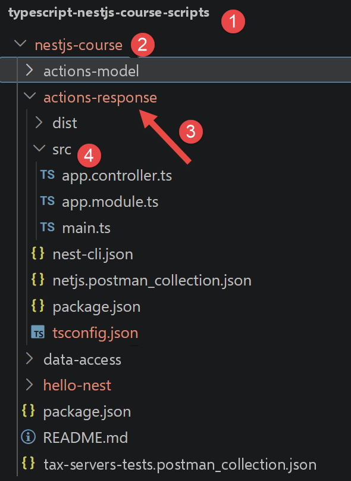
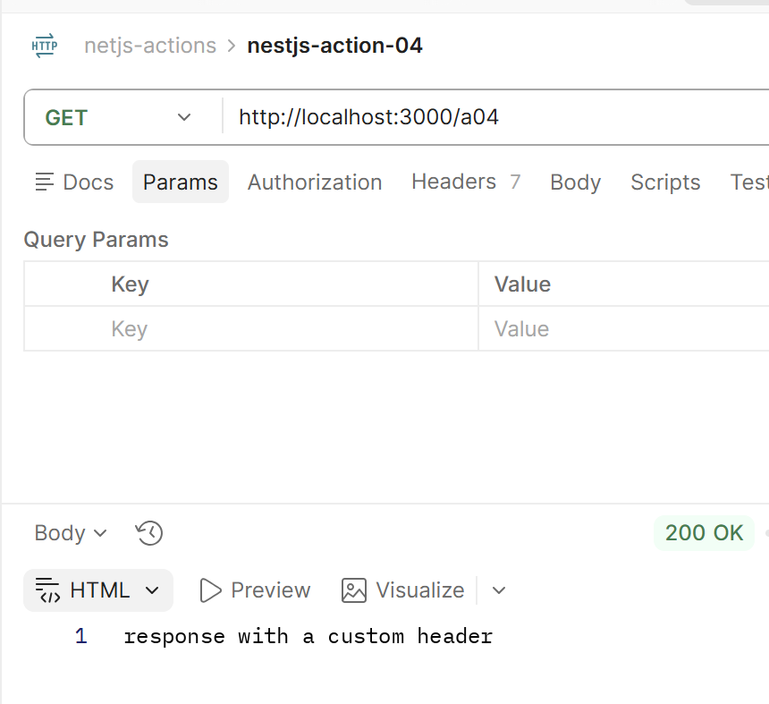
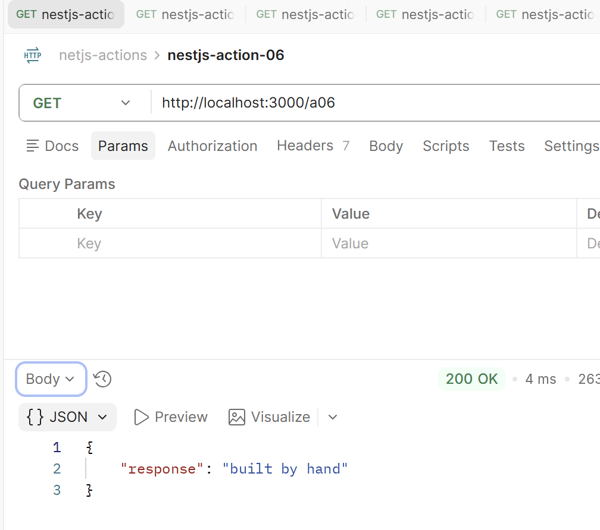
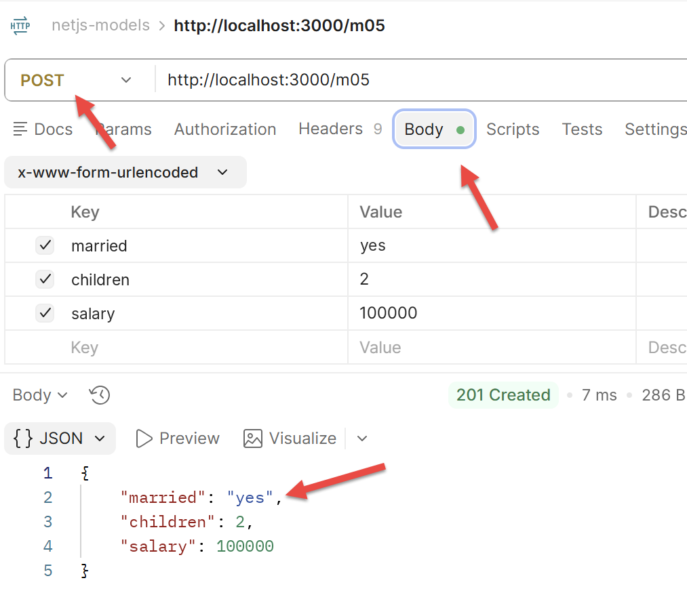
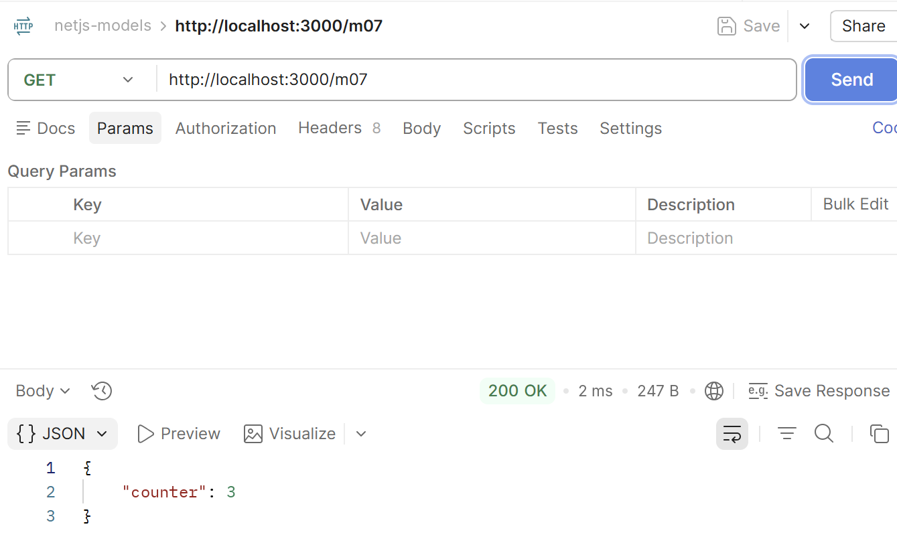

8. Inleiding tot het webframework NestJS
8.1. Bronnen
Deze cursus put uit de volgende bronnen:
- de officiële NestJS-website: https://nestjs.com en de bijbehorende documentatie https://docs.nestjs.com;
- de GitHub-repository van het framework: https://github.com/nestjs/nest;
8.2. Gebruikte hulpmiddelen
- Node.js, LTS-versie (18 of hoger), en de bijbehorende pakketbeheerder npm;
- de CLI van NestJS (@nestjs/cli), een opdrachtregelprogramma dat de structuur van een nieuw project aanmaakt, op basis van een kant-en-klare template bestanden genereert (controllers, services, modules enzovoort) en de ontwikkelserver start;
- een code-editor: Visual Studio Code, met de TypeScript-extensie;
- een (HTTP-)client om de beschikbaar gestelde endpoints (URL's) te testen: Postman, of gewoon de opdracht
curl; - een MySQL-databaseserver.
8.3. De rol van NestJS in een webapplicatie
NestJS is een Node.js-framework, geschreven in TypeScript, bedoeld om de serverzijde van een webapplicatie te bouwen, meestal een REST-API (jSON), soms een GraphQL- of realtime-applicatie (WebSockets). Het heruitvindt de afhandeling van het HTTP-protocol zelf niet: standaard leunt het op Express, een eenvoudiger Node.js-framework dat de onbewerkte HTTP-verzoeken ontvangt en beantwoordt (Fastify is een mogelijk alternatief voor Express). NestJS bouwt hierop voort en biedt een codeorganisatie die Node.js en Express zelf niet opleggen: indeling in modules, controllers en services; dependency injection; decorators...
De architectuur is sterk geïnspireerd op Angular (decorators, modules, dependency injection). Het algemene idee is dat van één enkel toegangspunt dat alle verzoeken van de applicatie ontvangt en ze vervolgens, op basis van de gevraagde actie, doorstuurt naar de juiste controller; elke controller steunt op zijn beurt op services die de bedrijfslogica en de gegevenstoegang afhandelen, in plaats van deze code rechtstreeks in de controller te schrijven.
NestJS is in de eerste plaats ontworpen om jSON-antwoorden te genereren: standaard wordt alles wat een controllermethode teruggeeft automatisch naar jSON omgezet en naar de client verstuurd, zonder bijzondere configuratie; dit controleren we bij de eerste actie van het miniproject hieronder. Server-side rendering van HTML-views (met Handlebars, EJS of Pug) blijft mogelijk (we gebruiken het hier iets verderop zelfs), maar het is een optie en niet het standaardgedrag.
8.4. Het MVC-ontwikkelmodel van NestJS
Drie concepten vormen de structuur van een NestJS-applicatie:
- modules (decorator @Module): een module groepeert een reeks samenhangende functionaliteiten; ze declareert welke controllers en services erbij horen, van welke andere modules ze afhankelijk is en wat ze voor anderen beschikbaar stelt. Een NestJS-applicatie vertrekt altijd vanuit een rootmodule, AppModule, die alle andere modules van het project samenbrengt;
- controllers (decorator @Controller): een controller is het toegangspunt van de applicatie, een klasse waarvan elke methode HTTP-verzoeken ontvangt die overeenkomen met een bepaalde URL en een antwoord naar de client teruggeeft;
- providers (de @Injectable-decorator): een provider is een gewone klasse, meestal verantwoordelijk voor bedrijfslogica of gegevenstoegang, die NestJS automatisch kan aanmaken en aanbieden (oftewel „injecteren”) aan elke controller of service die deze nodig heeft.
In de praktijk declareert een klasse die een provider nodig heeft deze eenvoudig als parameter in de constructor: NestJS maakt de benodigde instantie aan en geeft die automatisch door, zonder dat u zelf ooit new hoeft te schrijven. Dit heet constructor-gebaseerde dependency injection, een werkwijze die in NestJS bijna altijd wordt gebruikt. Hieronder zien we daar een concreet voorbeeld van.
8.4.1. Een eerste NestJS-project
8.4.1.1. Het demoproject
Een zeer klein project, met één enkele actie [/hello], om de tools te verkennen.

8.4.1.2. Het project inrichten
Dit project is kant-en-klaar meegeleverd in de map met scripts die u hebt gedownload: het is de map nestjs-course/hello-nest/ die op de schermafbeelding hierboven te zien is (label [3]), met alle bestanden al op hun plaats. U hoeft dus niets aan te maken: open deze bestaande map gewoon in VSCode (voer npm install uit als u dat nog niet hebt gedaan; zie de inleiding van dit document) en ga direct door naar de volgende paragraaf.
Opmerking: De drie onderstaande commando’s dienen alleen om op een andere locatie helemaal opnieuw een nieuw NestJS-project te genereren; zo is de map hello-nest/ oorspronkelijk eenmalig aangemaakt. Zorg dat u ze niet uitvoert vanuit de reeds bestaande map hello-nest/ : als u nest new hello-nest daar uitvoert, ontstaat een geneste submap hello-nest/hello-nest/. Dat is hier niet de bedoeling en het is een fout die gemakkelijk wordt gemaakt.
Ter informatie: als u dit project zelf helemaal opnieuw wilt aanmaken (in een lege map, buiten de mapstructuur van de cursus), is het als volgt gegenereerd:
Dit commando genereert een project met de volgende essentiële bestanden:
8.4.1.3. De architectuur van een NestJS-applicatie
Deze vier bestanden alleen al illustreren de MVC-architectuur van NestJS: een ingangspunt (main.ts), een rootmodule (app.module.ts), een controller (app.controller.ts) en een service (app.service.ts).
8.4.1.4. De controller
src/app.service.ts
Laten we deze code toelichten:
- regel 1: [// src/app.service.ts] — een eenvoudig commentaar dat het betreffende bestand aanduidt, zonder invloed op de uitvoering — handig om het overzicht te bewaren wanneer meerdere bestanden na elkaar worden getoond.
- regel 2: [import { Injectable } from '@nestjs/common';] — zoals in standaard TypeScript importeren we elk gebruikt element expliciet, in dit geval uit @nestjs/common, de module die de meeste decorators en hulpklassen van NestJS bevat.
- regel 4: [@Injectable()] — een decorator is een annotatie die direct boven een klasse, methode of parameter van TypeScript wordt geplaatst (voorafgegaan door het symbool @) en die het gedrag ervan wijzigt of uitbreidt zonder de code aan te passen — het mechanisme waarop vrijwel het hele vocabulaire van NestJS is gebaseerd. @Injectable() markeert deze klasse als provider: NestJS maakt haar zelf aan en biedt haar automatisch aan elke andere klasse aan die erom vraagt in de constructor, zonder dat u ooit new AppService() hoeft te schrijven.
- Regel 5: [export class AppService {] — een gewone TypeScript-klasse, geëxporteerd zodat ze elders kan worden geïmporteerd (hier door de controller) — op dit punt niets specifieks voor NestJS, afgezien van de decorator die eraan voorafgaat.
- regel 6: [ getHello(): string {] — een gewone methode; : string declareert het type van de geretourneerde waarde — een kenmerk dat specifiek is voor TypeScript en dat in JavaScript ontbreekt.
- Regel 7: [ return 'Hello, world!';] — de daadwerkelijk geretourneerde inhoud — voorlopig een eenvoudige vaste tekenreeks.
src/app.controller.ts
Laten we deze code toelichten:
- regel 1: [// src/app.controller.ts] — dezelfde opmerking als hierboven: een commentaar zonder invloed op de uitvoering.
- regel 2: [import { Controller, Get } from '@nestjs/common';] — importeert de twee decorators die later worden gebruikt: @Controller (voor de klasse) en @Get (voor een methode).
- regel 3: [import { AppService } from './app.service';] — importeert de zojuist gedefinieerde service, zodat die in de onderstaande constructor kan worden geïnjecteerd.
- Regel 5: [@Controller()] — @Controller() decoreert de volgende klasse zodat ze een controller wordt: NestJS stuurt er de HTTP-verzoeken naartoe die bij de routes ervan horen. Het argument tussen haakjes is een optioneel prefix dat vooraan alle routes van de klasse wordt geplaatst — met @Controller('api') zou een methode die is gedecoreerd met @Get('x') reageren op /api/x. Hier is het prefix leeg: de route „hello”, die hieronder wordt gedefinieerd, reageert dus rechtstreeks op /hello.
- Regel 6: [export class AppController {] — de controllerklasse, volgens afspraak genoemd naar het patroon <Name>Controller.
- Regel 7: [ constructor(private readonly appService: AppService) {}] — de constructor declareert een parameter appService van het type AppService, voorafgegaan door de TypeScript-modifier private readonly, die haar in één regel declareert EN registreert als eigenschap van de instantie (this.appService). NestJS ziet dat de controller een AppService nodig heeft, maakt er één instantie van aan (één enkele, gedeeld door de hele applicatie) en levert die hier automatisch aan: dit is de constructor-gebaseerde dependency injection die eerder is genoemd — u schrijft nooit
new AppService(). - regel 9: [ @Get('hello')] — @Get('hello') koppelt de volgende methode aan de HTTP-route GET /hello: deze decorator maakt de actie bereikbaar op het testbare adres http://localhost:3000/hello zodra de server draait. Andere decorators vervullen dezelfde functie voor de overige HTTP-werkwoorden — @Post(), @Put(), @Delete(), @Patch() — die we in het volgende hoofdstuk uitgebreid behandelen.
- Regel 10: [ hello(): string {] — de naam van de methode,
hello, heeft op zich geen verband met de route: NestJS roept haar alleen aan omdat ze direct erboven is gedecoreerd met@Get. Een naam kiezen die de actie weergeeft is slechts een conventie voor de leesbaarheid. - Regel 11: [ return this.appService.getHello();] — de controller delegeert het werk aan de geïnjecteerde service in plaats van zelf het antwoord te coderen: hij blijft een eenvoudige routeringslaag, terwijl de bedrijfslogica in de service zit.
src/app.module.ts
Laten we deze code toelichten:
- regel 1: [// src/app.module.ts] — nogmaals hetzelfde soort commentaar ter identificatie, zonder invloed op de uitvoering.
- regel 2: [import { Module } from '@nestjs/common';] — importeert de decorator @Module, die op regel 6 wordt gebruikt.
- regel 6: [@Module({] — @Module({...}) decoreert de volgende klasse zodat ze een module wordt: die groepeert een samenhangend deel van de applicatie en declareert in het object dat als argument wordt doorgegeven waaruit ze bestaat. Er zijn vier eigenschappen mogelijk (we gebruiken er hier maar twee): controllers (de controllers die deze module beschikbaar stelt), providers (de services die deze module levert en die binnen de module kunnen worden geïnjecteerd), imports (de andere modules waarvan deze module afhankelijk is) en exports (de providers die deze module beschikbaar stelt aan modules die haar importeren).
- Regel 7: [ controllers: [AppController],] — declareert dat AppController, eerder gedefinieerd, tot deze module behoort — zonder deze declaratie zou NestJS deze controller negeren en zouden de routes ervan op geen enkel verzoek reageren.
- Regel 8: [ providers: [AppService],] — declareert op dezelfde wijze dat AppService tot deze module behoort en daardoor beschikbaar is voor dependency injection — het is deze array die het mogelijk maakt dat de controller de service in de constructor ontvangt.
- Regel 10: [export class AppModule {}] — de rootmodule van de applicatie, volgens afspraak AppModule genoemd: dit is de module die main.ts gebruikt om de server te starten.
8.4.1.5. Uitvoering
Wanneer u http://localhost:3000/hello in een browser opent, krijgt u het antwoord „Hello, world!”. De decorator @Get('hello') koppelt de methode hello() aan het endpoint /hello in de URL; NestJS stuurt de geretourneerde tekenreeks ongewijzigd terug. Standaard start npm run start:dev de server op poort 3000: dit is de poort die we in alle voorbeelden van de volgende hoofdstukken zullen zien.
8.4.1.6. Conclusie
Het trio controller/service/module dat we zojuist hebben geschreven is de ruggengraat van elke NestJS-applicatie; deze structuur zien we, op grotere schaal, terug in de volgende hoofdstukken en in de casus in Hoofdstuk 6.
8.4.2. De MVC-architectuur van NestJS
8.4.2.1. De modules
De @Module-decorator accepteert vier hoofdeigenschappen: imports (de andere modules waarvan deze module afhankelijk is), controllers (de controllers die ze beschikbaar stelt), providers (de services die ze levert, zowel aan zichzelf als aan de modules die haar importeren) en exports (de providers die ze beschikbaar stelt aan andere modules). Een NestJS-applicatie is een boom van modules, met een rootmodule — AppModule — die ze bij het opstarten allemaal samenbrengt, ongeveer zoals een algemeen projectoverzicht (lezers die vertrouwd zijn met Spring herkennen hierin de rol van een centraal configuratiebestand).
8.4.2.2. Controllers
Een controller is een klasse die is geannoteerd met @Controller(prefix): ze ontvangt HTTP-verzoeken en geeft een antwoord terug aan de client. Het prefix, dat optioneel is, wordt vooraan alle routes van de klasse geplaatst — met @Controller('users') zou een methode die is gedecoreerd met @Get(':id') reageren op /users/:id, en niet op /:id. Elke methode van de controller wordt aan een route gekoppeld via een decorator die overeenkomt met het gewenste werkwoord: @Get om te lezen, @Post om aan te maken, @Put om te vervangen, @Patch om gedeeltelijk te wijzigen, @Delete om te verwijderen. Het pad van een route kan variabele segmenten bevatten, ingeleid door :, zoals in @Get('users/:id') (:id legt dan de waarde vast die op die positie in de opgevraagde URL staat). In het volgende hoofdstuk gaan we in detail in op de decorators waarmee u de gegevens uit het verzoek kunt ophalen (@Query, @Param, @Body...).
8.4.2.3. Providers en dependency injection
Een klasse die is geannoteerd met @Injectable() is een provider: NestJS instantieert en injecteert haar automatisch overal waar erom wordt gevraagd in een constructor, op voorwaarde dat ze is opgenomen in de providers-array van een module (de eigen module of een module die haar exporteert). Standaard is een NestJS-provider een singleton: er wordt één instantie aangemaakt wanneer de applicatie start en diezelfde instantie wordt gedeeld door alle componenten die haar nodig hebben — in plaats van dat voor elk verzoek een nieuwe instantie wordt aangemaakt (lezers die vertrouwd zijn met Spring herkennen hierin het standaardgedrag van een bean).
8.4.2.4. Samenvattende vergelijking met Spring MVC
De volgende tabel is uitsluitend ter informatie: ze is bedoeld voor lezers die al vertrouwd zijn met Spring MVC en hun bestaande kennis willen toepassen. U hoeft haar niet te begrijpen om de rest van deze cursus te volgen — alle hier genoemde NestJS-termen worden, los van Spring, uitgelegd in dit hoofdstuk en in de volgende.
- @Controller (Spring) ↔ @Controller (NestJS)
- @GetMapping / @RequestMapping (Spring) ↔ @Get(), @Post()... (NestJS)
- @RequestParam (Spring) ↔ @Query() (NestJS)
- @PathVariable (Spring) ↔ @Param() (NestJS)
- @RequestBody (Spring) ↔ @Body() (NestJS)
- @Service / @Repository + @Autowired (Spring) ↔ @Injectable() + constructorinjectie (NestJS)
- configuratiebestand / component scanning (Spring) ↔ @Module (NestJS)
- ResponseEntity<T> (Spring) ↔ rechtstreeks geretourneerd object, of @Res() voor volledige controle (NestJS)
8.5. Acties: het antwoord

Dit hoofdstuk onderzoekt, actie voor actie, de verschillende manieren waarop een NestJS-controller het antwoord kan samenstellen dat naar de client wordt gestuurd. Elke actie kan worden getest met curl of Postman in een nieuw project dat is aangemaakt met nest new actions-response; net als in het vorige hoofdstuk start npm run start:dev de server op poort 3000, dus alle onderstaande URL’s van de acties hebben de vorm http://localhost:3000/.... Alle acties in dit hoofdstuk zijn methoden van één enkele controller, AppController, geannoteerd met @Controller() zonder prefix — net als in het vorige hoofdstuk geeft het argument tussen haakjes van de @Get(...) van elke actie dus rechtstreeks de URL ervan.
8.5.1. Onderdelen van de NestJS-applicatie
De applicatie bestaat uit drie bestanden (zie 4 hierboven)
8.5.1.1. src/app.controller.ts
Dit bestand combineert zes methoden in één enkele klasse, AppController, waarbij de decorators (Header, HttpCode, Redirect, Res) die door een of meer van deze methoden worden gebruikt, bovenaan het bestand zijn gegroepeerd.
We komen iets later terug op deze zes methoden.
8.5.1.2. src/app.module.ts
Laten we deze code toelichten:
- regel 5: @Module({ — anders dan bij de rootmodule van het project hello-nest uit het vorige hoofdstuk is hier geen
providers-eigenschap aanwezig: dit project definieert geen services; alle logica zit in de methoden van de controller zelf. - regel 6: controllers: [AppController], — de enige benodigde declaratie: ze koppelt AppController — en dus de zes routes ervan — aan deze module.
8.5.1.3. src/main.ts
Het ingangspunt blijft in alle projecten hetzelfde: het gebruikt precies dezelfde opzet met bootstrap() als in het project hello-nest uit het vorige hoofdstuk: de applicatie wordt aangemaakt vanuit de rootmodule en luistert vervolgens op poort 3000.
8.5.1.4. [/a01]: Tekst retourneren
Laten we deze code toelichten:
- regel 1: [@Get('a01')] — @Get('a01') koppelt deze methode aan de route GET /a01 — net als in het vorige hoofdstuk koppelt deze decorator een URL aan een methode. Deze actie is dus bereikbaar op http://localhost:3000/a01 zodra de server is gestart (npm run start:dev).
- Regel 2: [a01(): string {] — de naam van de methode, a01, heeft op zich geen verband met de route: NestJS roept haar alleen aan omdat ze direct erboven is gedecoreerd met @Get . Een methode dezelfde naam geven als de actie, zoals in dit hele hoofdstuk gebeurt, is slechts een conventie voor de leesbaarheid, bedoeld om de actie die bij een URL hoort gemakkelijk terug te vinden.
- Regel 3: [ return 'Hello from the action [/a01]';] — de methode retourneert eenvoudig een tekenreeks.
NestJS stuurt de geretourneerde tekenreeks ongewijzigd naar de client, met een Content-Type-header die is ingesteld op text/html.
8.5.1.5. [/a02]: Een object retourneren, automatisch geserialiseerd naar JSON
Laten we deze code toelichten:
- regel 1: [@Get('a02')] — bereikbaar op http://localhost:3000/a02.
- regel 2: [a02(): object {] — deze keer declareert de methode dat ze een object retourneert in plaats van een string — dit retourtype verandert het gedrag van NestJS; zie hieronder.
- Regel 3: [ return { message: 'Hello', value: 42 };] — een JavaScript/TypeScript-objectliteral met twee eigenschappen.
Zodra een methode een object (of een array) retourneert, serialiseert NestJS dit automatisch naar JSON en stelt het de Content-Type-header in op: application/json — u hoeft niets bijzonders te doen om een JSON-antwoord te krijgen, anders dan bij de [/a01]-tekenreeks, die platte tekst oplevert.
8.5.1.6. [/a03]: De HTTP-statuscode wijzigen
Laten we deze code ontleden:
- regel 1: [import { Get, HttpCode } from '@nestjs/common';] — importeert de twee decorators die hieronder worden gebruikt.
- regel 3: [@Get('a03')] — bereikbaar op http://localhost:3000/a03. Standaard antwoordt een @Get-actie met HTTP-statuscode 200 (het driecijferige getal dat bij elk antwoord wordt meegestuurd en de client vertelt of het verzoek is geslaagd — 200: geslaagd, 404: resource niet gevonden, 500: serverfout, enzovoort).
- regel 4: [@HttpCode(201)] — @HttpCode(201) forceert expliciet de statuscode die deze actie retourneert, in dit geval 201 (Created), in plaats van de standaardwaarde 200 — een louter didactische keuze om de decorator te illustreren, die normaal gereserveerd zou zijn voor een actie die daadwerkelijk een resource aanmaakt (doorgaans een @Post in plaats van een @Get). Een standaardbrowser toont de ontvangen statuscode niet; gebruik Postman of het tabblad Netwerk in de ontwikkelaarstools om die te controleren.
8.5.1.7. [/a04]: Een HTTP-header toevoegen
Laten we deze code toelichten:
- regel 1: [import { Get, Header } from '@nestjs/common';] — importeert de twee decorators die hieronder worden gebruikt.
- regel 3: [@Get('a04')] — bereikbaar op http://localhost:3000/a04.
- regel 4: [@Header('X-My-Header', 'a-value')] — een header (HTTP) is aanvullende informatie die met het antwoord wordt meegestuurd, los van de berichttekst — de Content-Type die hierboven is genoemd is daar een standaardvoorbeeld van. @Header(name, value) voegt hier een aangepaste header toe, X-My-Header, met de waarde a-value. Net als bij de statuscode toont een standaardbrowser ontvangen headers niet standaard: u hebt Postman of de ontwikkelaarstools nodig om ze te bekijken.
8.5.1.8. [/a05]: De client omleiden
Laten we deze code toelichten:
- regel 1: [import { Get, Redirect } from '@nestjs/common';] — importeert de twee decorators die hieronder worden gebruikt.
- regel 3: [@Get('a05')] — bereikbaar op http://localhost:3000/a05 — wanneer deze URL in een browser wordt geopend, volgt onmiddellijk een omleiding naar https://nestjs.com.
- regel 4: [@Redirect('https://nestjs.com', 302)] — @Redirect(url, code) zorgt ervoor dat de actie antwoordt met een HTTP-omleiding naar url, met statuscode code (302, Found, is de standaardwaarde als dit tweede argument wordt weggelaten) — de browser volgt deze omleiding automatisch zonder tussenkomst van de gebruiker.
- Regel 5: [a05() {}] — de body van de methode is leeg: al het werk wordt gedaan door de decorator @Redirect direct erboven; de methode zelf hoeft niets te retourneren.
8.5.1.9. [/a06]: Rechtstreekse toegang tot het Express-responseobject
Laten we deze code toelichten:
- regel 1: [import { Get, Res } from '@nestjs/common';] — importeert de decorator @Res, die op regel 5 wordt gebruikt, naast de reeds bekende @Get.
- regel 2: [import { Response } from 'express';] — importeert het Response -type van TypeScript dat door Express wordt geleverd (de HTTP-server waarop NestJS standaard steunt; zie het hoofdstuk „Inleiding”) en dat wordt gebruikt om de onderstaande parameter te typeren.
- Regel 4: [@Get('a06')] — bereikbaar op http://localhost:3000/a06.
- Regel 5: [a06(@Res() res: Response): void {] — @Res() geeft het onbewerkte Express-responseobject rechtstreeks als argument door aan de methode, hier genoemd res. Dit is het tegenovergestelde van [/a01]/[/a02]: in plaats van NestJS het antwoord te laten samenstellen uit de geretourneerde waarde, neemt de code hier de volledige controle over het gehele HTTP-antwoord.
- Regel 6: [ res.status(200).json({ response: 'built by hand' });] — roept rechtstreeks de methoden van de Express-API aan — status(200) stelt de statuscode in, json({...}) serialiseert het object naar JSON en verstuurt het antwoord daadwerkelijk (deze twee stappen verlopen normaal automatisch, zoals in [/a02]).
Opmerking: Zodra @Res() wordt gebruikt, moet de code van de methode het antwoord zelf expliciet versturen (res.send(...), res.json(...)...): NestJS grijpt niet langer automatisch in, ook niet voor alles wat in de vorige acties automatisch verliep (JSON-serialisatie, standaardstatuscode enzovoort). Dit is de techniek die de frontcontroller in onze casus (Hoofdstuk 6) gebruikt om de volledige controle over het antwoord te behouden, net zoals de Response-klassen van de overgezette PHP-server dat deden.
De NestJS-applicatie uitvoeren

Typ in een terminal in de hoofdmap van het project het volgende commando:
U krijgt het volgende antwoord:
8.5.2. Postman-tests
Voor het testen met Postman kunt u de volgende verzameling verzoeken gebruiken:

Hier volgen de Postman-tests voor de zes acties:
8.5.2.1. Actie a01

8.5.2.2. Actie a02

8.5.2.3. Actie a04

Om de header te bekijken die door de server is verzonden:

8.5.2.4. Actie a05

In [1] de site waarnaar de Postman-client is omgeleid.
8.5.2.5. Actie a06

8.5.3. Conclusie
NestJS biedt dus twee manieren om een antwoord samen te stellen: ofwel laat u het framework het automatisch opbouwen op basis van de waarde die de methode retourneert — het meest gebruikelijke geval, geïllustreerd door [/a01] tot en met [/a05] — ofwel neemt u, met @Res(), de volledige handmatige controle over het HTTP-antwoord, met als prijs dat u alles zelf moet beheren ([/a06]).
8.6. Acties: het model

Dit hoofdstuk is het tegenstuk van het vorige: de aandacht gaat niet langer uit naar het samenstellen van het antwoord, maar naar het ophalen van de informatie in het verzoek van de client (URL-parameters, verzonden body, headers enzovoort). Net als in het vorige hoofdstuk zijn alle acties methoden van dezelfde controller AppController geannoteerd met @Controller() zonder prefix, en luistert de server standaard op poort 3000 — de onderstaande URL’s hebben dus allemaal de vorm http://localhost:3000/....
8.6.1. De onderdelen van de NestJS-applicatie
Laten we de bestanden (zie 4 hierboven) waaruit het project actions-model bestaat, wat nauwkeuriger bekijken.
8.6.1.1. src/app.controller.ts
Eén enkele klasse, AppController, bevat acht methoden, met alle decorators (@Query, @Param, @Body, @Headers, @Session, @Req) en de CalculationDto (zie [/m04] en [/m05]) die door een of meer ervan worden gebruikt. We bespreken deze methoden zo meteen.
8.6.1.2. src/app.module.ts
Dezelfde opmerking als in het vorige hoofdstuk: ook hier geen providers , omdat dit project geen afzonderlijke services definieert.
8.6.1.3. src/main.ts
Laten we deze code toelichten:
- regel 9: app.use(session({ secret: 'xxx', resave: false, saveUninitialized: false })); — installeert de Express-middleware
express-session— deze regel, die hier maar één keer voorkomt en voor de hele applicatie geldt, maakt de sessieteller mogelijk die in [/m07] te zien is. De secret wordt gebruikt om de sessiecookie te ondertekenen; in productie moet deze uit een omgevingsvariabele komen en mag hij nooit als platte tekst in de code worden geschreven. - regels 10–15: app.useGlobalPipes(new ValidationPipe({ ... })); — declareert globaal, voor alle controllers van de applicatie, dezelfde ValidationPipe als die welke lokaal is toegepast op [/m05] met @UsePipes. De twee opties
transform: trueenenableImplicitConversion: trueschakelen automatische typeconversie in (met name van tekenreeksen in deURLnaar getallen) vóór de validatie.
8.6.1.4. [/m01]: parameters van een GET
Laten we deze code toelichten:
- regel 1: [@Get('m01')] — net als in het vorige hoofdstuk koppelt deze decorator de methode aan de route GET /m01.
- regel 2: [m01(@Query('name') name: string, @Query('age') age: string): object {] — @Query(name) is een nieuwe decorator, die deze keer wordt toegepast op een methodeparameter in plaats van op de klasse of de methode zelf: hij haalt een parameter op uit de query string (het deel van de URL na het teken ?, in de vorm key=value gescheiden door &) en levert die rechtstreeks als argument aan — al benoemd en getypeerd — zonder dat u hem zelf hoeft op te halen. Hier haalt @Query('name') de parameter "name" op en wijst die toe aan de variabele
name, en hetzelfde geldt voorage. Deze actie kan dus worden getest op http://localhost:3000/m01?name=Serge&age=60, wat name = "Serge" en age = "60" teruggeeft (een waarde uit een query string wordt altijd als tekenreeks ontvangen, ook als die op een getal lijkt). - Regel 3: [ return { name, age };] — verkorte notatie voor { name: name, age: age }: wanneer de naam van de eigenschap en de naam van de variabele identiek zijn, kunt u volstaan met de naam.
8.6.1.5. [/m02]: onderdelen van een URL
Laten we deze code toelichten:
- Regel 1: [@Get('m02/:id')] — de :id in het routepad is een variabel segment (een routeparameter): NestJS legt vast wat er op die specifieke plaats in de opgevraagde URL staat. Een verzoek naar http://localhost:3000/m02/5 legt dus 5 vast; een verzoek naar /m02/abc zou abc vastleggen.
- Regel 2: [m02(@Param('id') id: string): object {] — @Param(name) is de complementaire decorator van @Query, zoals gezien bij [/m01]: waar @Query de query string leest (na het teken ?), leest @Param een variabel segment van het pad zelf (hier: id). @Param('id') injecteert de vastgelegde waarde dus in de variabele id.
- Regel 3: [ return { id };] — retourneert eenvoudig de ontvangen waarde, verpakt in een object.
8.6.1.6. [/m03]: parameters van een POST
Laten we deze code toelichten:
- Regel 1: [@Post('m03')] — @Post() is de decorator die overeenkomt met @Get() voor het HTTP-werkwoord POST, dat normaal wordt gebruikt om gegevens naar de server te sturen (een resource aanmaken, een formulier verzenden enzovoort) en niet om een eenvoudige URL te lezen. Anders dan bij de vorige acties kan deze actie niet worden getest door eenvoudig de URL in een browser in te typen (die alleen GET-verzoeken doet): u hebt een client nodig die een POST-verzoek kan verzenden.
- regel 2: [ m03(@Body() body: any): object {] — @Body(), zonder argumenten, injecteert ditmaal de volledige body van het verzoek (anders dan @Query/@Param, die elk één benoemd veld lezen);
anyis eenTypeScript-type dat „elk type” betekent en hier wordt gebruikt omdat aan de ontvangen gegevens nog geen specifiek formaat is opgelegd (zie[/m04]voor een getypeerde versie). - regel 3: [ return body;] — retourneert de ontvangen body ongewijzigd, om te controleren wat er is verzonden.
Opmerking: De body van het verzoek moet worden verzonden met een content-type dat NestJS kan verwerken (application/json of application/x-www-form-urlencoded): de body-parser-middleware — standaard ingeschakeld in NestJS — leest deze ruwe body en zet hem om in een JavaScript-object voordat er via @Body() toegang toe is. Kan worden getest met Postman of met curl -X POST http://localhost:3000/m03 -H "Content-Type: application/json" -d '{"a":1}'.
8.6.1.7. [/m04]: De verzonden parameters aan een klasse koppelen
dto/calculation.dto.ts
Laten we deze code toelichten:
- Regel 1: [// dto/calculation.dto.ts] — een commentaar om het bestand te identificeren; heeft geen invloed op de uitvoering.
- regel 2: [export class CalculationDto {] — een klasse die uitsluitend het formaat van de verwachte gegevens beschrijft, zonder enige methode — dit heet een DTO (Data Transfer Object), een eenvoudige getypeerde gegevensstructuur om informatie van het ene deel van het programma naar het andere over te dragen (in dit geval van de client naar de controller).
- Regel 3: [ married: string;] — een getypeerde eigenschap: married moet een tekenreeks zijn — TypeScript controleert dit type tijdens het compileren.
- Regel 4: [ children: number;] — „children” moet een getal zijn.
- Regel 5: [ salary: number;] — Het salaris moet een getal zijn.
Laten we deze code ontleden:
- Regel 1: [@Post('m04')] — dezelfde opmerking als bij [/m03]: test dit met Postman of curl, niet rechtstreeks in de adresbalk van een browser.
- regel 2: [m04(@Body() data: CalculationDto): CalculationDto {] — nog steeds @Body(), zoals in [/m03], maar ditmaal is de variabele
datagetypeerd als CalculationDto in plaats vanany: NestJS zet de ontvangen JSON automatisch om in een instantie van deze klasse, met benoemde en getypeerde eigenschappen (married, children, salary) in plaats van een generiek, ongetypeerd object — wat controle door de TypeScript-compiler en automatisch aanvullen in de editor mogelijk maakt. Let op: in dit stadium is er nog steeds geen garantie dat de ontvangen gegevens daadwerkelijk aan dit formaat voldoen (een client kan van alles sturen) — zie[/m05]voor de echte validatie.
8.6.1.8. [/m05]: Het model van de actie valideren
We installeren twee aanvullende bibliotheken voor NestJS voor de validatie:
dto/calculation.dto.ts
Laten we deze code toelichten:
- regel 1: [import { IsIn, IsInt, Min } from 'class-validator';] — class-validator is een bibliotheek die los staat van NestJS (maar er zeer veel mee wordt gebruikt) en waarmee u met decorators validatieregels rechtstreeks op de eigenschappen van een klasse kunt definiëren — zoals @IsIn, @IsInt, en Min, die hier worden geïmporteerd.
- Regel 4: [ @IsIn(['yes', 'no'])] — @IsIn([...]) vereist dat de waarde van de volgende eigenschap (married) voorkomt in de opgegeven lijst — in dit geval alleen 'yes' of 'no'; elke andere waarde wordt geweigerd.
- regel 7: [ @IsInt() @Min(0)] — twee decorators kunnen na elkaar op dezelfde eigenschap worden toegepast: @IsInt() vereist een geheel getal en @Min(0) vereist een waarde groter dan of gelijk aan 0 — beide regels gelden samen voor „children”.
Laten we deze code toelichten:
- regel 1: [import { Body, Post, UsePipes, ValidationPipe } from '@nestjs/common';] — importeert, naast de reeds bekende decorators, UsePipes en ValidationPipe
- regel 3: [@Post('m05')] — te testen met Postman of curl (POST), niet in de adresbalk van een browser.
- Regel 4: [@UsePipes(new ValidationPipe())] — een pipe is een NestJS-mechanisme dat zich tussen het ontvangen verzoek en de code van de methode plaatst om gegevens te transformeren of te valideren voordat ze de controller bereiken. ValidationPipe, geleverd door NestJS, is de standaardvalidatiepipe: ze evalueert de class-validator-decorators die op de DTO zijn toegepast (@IsIn, @IsInt, @Min...) opnieuw en weigert automatisch elk verzoek waarvan de gegevens er niet aan voldoen, met een HTTP 400-antwoord (Bad Request) en zonder dat u zelf ook maar één
if-instructie hoeft te schrijven. @UsePipes() is de decorator waarmee een pipe voor een specifieke methode wordt ingeschakeld.
Opmerking: U kunt de validatie ook één keer voor alle controllers van de applicatie inschakelen, in plaats van methode voor methode met @UsePipes(): app.useGlobalPipes(new ValidationPipe()); in main.ts.
8.6.1.9. [/m06]: Toegang tot een HTTP-header
Laten we deze code toelichten:
- regel 1: [@Get('m06')] — bereikbaar op http://localhost:3000/m06.
- regel 2: [m06(@Headers('user-agent') userAgent: string): object {] — @Headers(name) leest een specifieke HTTP-header uit het binnenkomende verzoek (in tegenstelling tot @Header(), dat in het vorige hoofdstuk is besproken en dat een header toevoegde aan het uitgaande antwoord — hetzelfde woord, maar met tegengestelde betekenis, afhankelijk van of u leest of schrijft). Hier haalt @Headers('user-agent') de User-Agent-header op (de naam van de browser of de tool die het verzoek heeft verstuurd, automatisch meegestuurd door elke client). Zonder argument zou @Headers() een object met alle headers van het verzoek teruggeven.
- Regel 3: [ return { userAgent };] — retourneert de gelezen waarde, verpakt in een object.
8.6.1.10. [/m07]: Toegang tot de sessie
main.ts
Laten we deze code toelichten:
- Regel 2: [app.use(session({ secret: 'xxx', resave: false, saveUninitialized: false }));] — app.use(...) registreert een Express-middleware — een proces dat voor elk binnenkomend verzoek wordt uitgevoerd voordat het een controller bereikt. Hier zet de session-middleware (geleverd door de bibliotheek express-session) het sessiebeheer voor de hele applicatie op:
secretwordt gebruikt om de sessiecookie te ondertekenen (zodat die niet kan worden gemanipuleerd), enresaveensaveUninitializedzijn opties die bepalen wanneer de sessie daadwerkelijk aan de serverkant wordt opgeslagen.
Laten we deze code ontleden:
- regel 1: [import { Get, Session } from '@nestjs/common';] — importeert de @Session-decorator
- regel 3: [@Get('m07')] — bereikbaar op http://localhost:3000/m07 — als u de pagina meerdere keren ververst, wordt de teller verhoogd; de waarde ervan blijft aan de serverkant bewaard tussen de verzoeken door.
- regel 4: [m07(@Session() session: Record<string, any>): object {] — een sessie is een opslagruimte die bij één specifieke bezoeker hoort en aan de serverkant wordt bijgehouden over meerdere opeenvolgende verzoeken heen — anders dan een gewone variabele, die bij elk nieuw verzoek zou worden gereset. De client wordt geïdentificeerd door een cookie met een sessie-ID, dat de browser bij elk verzoek automatisch meestuurt zodra hij het heeft ontvangen. @Session() injecteert deze opslagruimte rechtstreeks als argument van de methode.
- regel 5: [ session.counter = (session.counter ?? 0) + 1;] — de operator ?? (null coalescing) geeft alleen de rechterkant terug als de linkerkant null of undefined is — hier initialiseert hij de teller bij het allereerste bezoek op 0, voordat hij die bij elk volgend verzoek met 1 verhoogt.
- Regel 6: [ return { counter: session.counter };] — retourneert de huidige waarde van de teller, die in de sessie is opgeslagen.
Dit is precies de express-session die we in Hoofdstuk 6 hebben gebruikt om de authenticatie en de lijst met simulaties van de server voor de belastingberekening op te slaan.
8.6.1.11. [/m08]: Toegang tot het volledige verzoek
Laten we deze code ontleden:
- regel 1: [import { Get, Req } from '@nestjs/common';] — importeert de @Req-decorator
- regel 2: [import { Request } from 'express';] — importeert het TypeScript-type Request dat door Express wordt geleverd, om de onderstaande parameter te typeren.
- Regel 4: [@Get('m08')] — beschikbaar op http://localhost:3000/m08.
- Regel 5: [m08(@Req() req: Request): object {] — @Req() injecteert rechtstreeks het onbewerkte Express-requestobject, met alles wat het bevat (methode, URL, headers, body, parameters...), in plaats van telkens één enkel gegeven zoals @Query, @Param, @Body, @Headers of @Session. Aan de kant van het verzoek is dit het exacte equivalent van wat @Res() aan de kant van het antwoord was voor [/a06] in het vorige hoofdstuk: minder automatisering door NestJS, maar volledige, onbeperkte toegang.
- Regel 6: [ return { method: req.method, url: req.url };] — leest rechtstreeks twee eigenschappen van het Express-requestobject: method (het gebruikte HTTP-werkwoord) en url (het opgevraagde pad).
De NestJS-applicatie uitvoeren

Typ in een terminal in de hoofdmap van het project het volgende commando:
U krijgt het volgende antwoord:
8.6.2. Postman-tests
Voor het testen met Postman kunt u de volgende verzameling verzoeken gebruiken:

Hier volgen de Postman-tests voor de acht methoden van de applicatie:
8.6.2.1. Actie m01

8.6.2.2. Actie m02

8.6.2.3. Actie m03

8.6.2.4. Actie m04

8.6.2.5. Actie m05


8.6.2.6. Actie m06

8.6.2.7. Actie m07
Na 3 verzoeken:

8.6.2.8. Actie m08

8.6.3. Conclusie
@Query, @Param, @Body, @Headers en @Session dekken het overgrote deel van de behoeften; @Req() blijft beschikbaar voor volledige, onbeperkte toegang tot het verzoek — dit is de optie die de actie [m06] in onze casus kiest, om dezelfde redenen als bij de actie [/a06] .
8.7. Gegevenstoegang: NestJS en databases
NestJS biedt verschillende manieren om een database te benaderen: in het Node-ecosysteem bestaan drie benaderingen naast elkaar, van de benadering die het dichtst bij SQL staat tot die welke het dichtst bij een ORM met gedecoreerde entiteiten staat — anders dan Spring Data, dat Java-ontwikkelaars één enkele benadering oplegt.

8.7.1. De native driver: een handgeschreven [DAO]-laag
Node biedt lichtgewicht drivers voor elk DBMS (mysql2 voor MySQL, pg voor PostgreSQL...) die SQL rechtstreeks beschikbaar stellen: u schrijft de query’s zelf, zonder abstractielaag tussen de code en de database. Dit is de aanpak van de [DAO]-laag in onze casus: een @Injectable()-service opent een verbinding en voert expliciete SQL-query’s uit.

Fragment uit src/model/server-dao.service.ts (hoofdstuk [case study]):
Laten we deze code toelichten:
- regel 1: [import mysql from 'mysql2/promise';] — de MySQL/MariaDB-driver voor Node.js wordt geïmporteerd (het pakket mysql2); het subpad mysql2/promise levert de variant op basis van Promises (en is dus bruikbaar met
await), in plaats van de oudere variant op basis van callbacks; - regel 3: [@Injectable()] — deze decorator markeert de volgende klasse als een NestJS-provider: een klasse die NestJS zelf kan instantiëren en kan injecteren in de constructor van een andere klasse (hier wordt ServerDaoService geïnjecteerd in een actiecontroller; zie het volgende hoofdstuk) — zonder deze decorator zou NestJS haar niet automatisch kunnen aanmaken;
- regel 6: [const connection = await mysql.createConnection({ ... })] — mysql.createConnection(...) opent een nieuwe netwerkverbinding met de MySQL/MariaDB-server, waarbij de host, de database, de gebruikersnaam en het wachtwoord rechtstreeks als parameters worden meegegeven;
awaitonderbreekt de uitvoering van de functie totdat de verbinding met succes tot stand is gebracht; - regel 12: [const [brackets] = await connection.query('select ... order by id')] — connection.query(...) voert de als tekenreeks doorgegeven SQL-query uit; de methode retourneert een array van twee elementen, waarvan het eerste (hier opgehaald via destructuring, [brackets]) de gelezen rijen bevat — er wordt geen SQL gegenereerd en er is geen object-relationele mapping: dit is precies de tekst die naar de database wordt gestuurd;
- regel 16: [await connection.end();] — de verbinding wordt expliciet gesloten zodra het lezen is voltooid — bij de native driver is het beheer van de levenscyclus van de verbinding volledig de verantwoordelijkheid van de code, anders dan bij de twee ORM-voorbeelden die verderop worden gepresenteerd.
Opmerking: Dit fragment is, zoals het hier is aangehaald, geen zelfstandig uitvoerbaar bestand: de identifiers TaxAdminData en taxAdminData die het gebruikt, zijn in dit fragment niet gedefinieerd. Het volledige, werkende bestand staat in src/model/server-dao.service.ts op de server [nestjs-case-study], die in het volgende hoofdstuk in detail wordt behandeld; het is dus geen URL om te testen, maar een interne methode die door de bedrijfslaag wordt aangeroepen.
Deze aanpak geeft volledige controle over de SQL die wordt uitgevoerd, zonder enige „magie” of automatische querygeneratie: wat u in de code ziet, is precies wat naar MySQL wordt gestuurd (dezelfde filosofie als JdbcTemplate in Spring MVC, of als rechtstreeks gebruikte PDO in PHP, voor wie vertrouwd is met een van deze omgevingen).
8.7.2. TypeORM: het equivalent van Spring Data JPA
TypeORM is de meest gebruikte ORM bij NestJS: hier worden tabellen gedefinieerd als gedecoreerde TypeScript-klassen (de „entiteiten”) en wordt de database bevraagd via een geïnjecteerde Repository, zonder voor eenvoudige gevallen SQL-query’s te schrijven (dit is de ORM die qua concept het meest lijkt op Spring Data JPA / Hibernate, voor wie vertrouwd is met die omgeving).
Opmerking: De volgende voorbeelden zijn afkomstig uit een klein, compleet en uitvoerbaar NestJS-project (de map typeorm/ die bij dit hoofdstuk wordt meegeleverd): het compileert en draait zoals het is, maar u hebt een echte MySQL-database dbtaxes-2019 nodig (aangemaakt met het meegeleverde SQL-script) om zonder fouten te kunnen reageren.

8.7.2.1. Configuratie van de module
In de rootmodule van de applicatie (app.module.ts) wordt de databaseverbinding één keer gedeclareerd met TypeOrmModule.forRoot(...):
app.module.ts
Laten we deze code toelichten:
- regel 1: [// app.module.ts] — dit commentaar geeft alleen aan waar het fragment vandaan komt: dit blok, TypeOrmModule.forRoot({...}), is een element in de
imports-lijst van de@Module({...})van de rootmodule van de applicatie, en geen zelfstandig bestand; - regel 2: [TypeOrmModule.forRoot({ ... })] — forRoot(...) configureert, één keer voor de hele applicatie, de databaseverbinding — het equivalent van de DataSource die we eerder met TypeORM zonder NestJS hebben gezien (Hoofdstuk 2); elke module die een specifieke entiteit nodig heeft, declareert die vervolgens eenvoudig met TypeOrmModule.forFeature(...), zoals hieronder wordt getoond;
- regel 9: [entities: [Bracket],] — de lijst met entiteitsklassen (hier slechts één: Bracket) die TypeORM moet herkennen om de overeenkomst tussen de TypeScript-klassen en de SQL-tabellen te kunnen leggen;
- Regel 10: [synchronize: false,] — als dit is ingesteld op true, zou TypeORM het databaseschema automatisch aanpassen aan de entiteiten — handig helemaal aan het begin van een project, maar gevaarlijk zodra een database in productie gegevens bevat: we laten het hier op false staan, zoals wordt aanbevolen wanneer men met een bestaande database werkt.
8.7.2.2. Entiteiten
Een entiteit is een gewone TypeScript-klasse waaraan decorators de nodige informatie toevoegen om haar te koppelen aan een SQL-tabel en de kolommen ervan:
entities/bracket.entity.ts
Laten we deze code toelichten:
- regel 1: [import { Entity, PrimaryGeneratedColumn, Column } from 'typeorm';] — we importeren de drie decorators die later in dit bestand worden gebruikt uit het pakket typeorm;
- regel 3: [@Entity('tbbrackets')] — deze decorator declareert dat de volgende klasse een SQL-tabel vertegenwoordigt: het argument 'tbbrackets' geeft de werkelijke naam van deze tabel in de database aan — zonder dit argument zou TypeORM een tabelnaam hebben afgeleid van de klassenaam, wat hier niet past omdat de bestaande tabel tbbrackets heet en niet bracket;
- regel 5: [@PrimaryGeneratedColumn()] — markeert de volgende eigenschap (id) als primaire sleutel van de tabel, waarvan de waarde automatisch door de database wordt gegenereerd (auto-increment) — u hoeft dus nooit zelf een waarde voor id op te geven wanneer u een rij aanmaakt;
- regel 8: [@Column('decimal')] — wijst de volgende eigenschap (limits) aan als een gewone kolom van de tabel; het argument 'decimal' geeft het SQL-type van de kolom aan — de andere twee kolommen (coeffR, coeffN) worden op dezelfde manier gedeclareerd.
@Entity, @Column, @PrimaryGeneratedColumn: de gebruikte terminologie is vrijwel identiek aan die van JPA (@Entity, @Column, @Id + @GeneratedValue) — TypeORM is bewust ontworpen om vertrouwd te zijn voor wie Hibernate kent, maar hier wordt geen enkele voorkennis verondersteld: deze decorators volstaan om de klasse aan de tabel te koppelen.
8.7.2.3. De repository
De Repository is het object dat toegang geeft tot de rijen van de tabel, zonder dat u voor gangbare bewerkingen zelf SQL-query’s hoeft te schrijven:
brackets.service.ts
Laten we deze code toelichten:
- regel 1: [import { InjectRepository } from '@nestjs/typeorm';] — InjectRepository is de decorator die specifiek is voor @nestjs/typeorm en waarmee u de injectie van een specifieke Repository kunt aanvragen (zie hieronder);
- regel 4: [@Injectable()] — net als hierboven maakt deze decorator van BracketsService een provider die NestJS kan instantiëren en elders kan injecteren — in dit geval in de onderstaande controller;
- regel 7: [@InjectRepository(Bracket)] — deze decorator, geplaatst vóór een constructorparameter, geeft NestJS de opdracht de Repository te injecteren die al is geconfigureerd voor de entiteit Bracket — degene die TypeOrmModule.forFeature([Bracket]) in de module registreert (zie hieronder); zonder deze decorator zou NestJS niet weten welke Repository hij moet aanleveren;
- regel 11: [return this.bracketsRepository.find({ order: { id: 'ASC' } });] — find(...) leest alle rijen van de tabel, gesorteerd op id in oplopende volgorde, en retourneert een Promise van een array van Bracket — geen handgeschreven SQL-query’s, anders dan bij de hierboven besproken aanpak met de native driver.
Repository<Bracket> is een door TypeORM geleverd object dat klaar voor gebruik is zodra het is geïnjecteerd: het biedt al de gangbare methoden (find, findOne, save, delete...) voor de tabel die hoort bij de entiteit Bracket, zonder dat u ze zelf hoeft te schrijven (precies dezelfde rol als die van JpaRepository<Bracket, Integer> aan de kant van Spring Data, voor wie vertrouwd is met die omgeving).
8.7.2.4. Een controller die de repository gebruikt
Het enige wat nog rest, is een module te declareren die de entiteit, de service en de controller met elkaar verbindt, en vervolgens een controller die de service als HTTP beschikbaar stelt:
brackets.module.ts
- regel 1: [@Module({ ... })] — deze decorator, die we al eerder hebben gezien, markeert de klasse als een NestJS-module: een eenheid die samenhangende elementen groepeert (in dit geval alles wat met belastingschijven te maken heeft);
- regel 2: [imports: [TypeOrmModule.forFeature([Bracket])],] — forFeature([Bracket]) registreert, voor deze specifieke module, de Repository voor de „Bracket”-entiteit (gebouwd op basis van de verbinding die al is geopend door forRoot(...) in de rootmodule) — het is deze Repository die @InjectRepository(Bracket) hierboven zal ophalen;
- regel 3: [providers: [BracketsService],] — de lijst met @Injectable()-klassen die deze module beschikbaar stelt — hier de service die de Repository gebruikt;
- regel 4: [controllers: [BracketsController],] — de lijst met controllers (@Controller()-klassen) die deze module beschikbaar stelt.
brackets.controller.ts
Laten we deze code toelichten:
- regel 1: [@Controller('brackets')] — deze decorator markeert de klasse als controller en stelt het URL-prefix in dat alle routes ervan gemeen hebben: 'brackets', dus /brackets — elke geannoteerde methode erbinnen voegt zo nodig haar eigen URL-segment toe;
- regel 3: [constructor(private readonly service: BracketsService) {}] — constructorinjectie, zoals eerder gezien: NestJS levert automatisch een instantie van BracketsService;
- regel 5: [@Get()] — koppelt de volgende methode aan GET-verzoeken; bij gebruik zonder argumenten, zoals hier, reageert de methode rechtstreeks op de basis-URL van de controller — zonder extra segment, dus eenvoudig /brackets (en niet bijvoorbeeld /brackets/all);
- regel 7: [return this.service.findAll();] — de array met Bracket-objecten die door de service wordt geretourneerd, wordt door NestJS automatisch naar JSON geserialiseerd en als body van het HTTP-antwoord verstuurd.
8.7.3. Het project uitvoeren
Zodra het project is gestart (npm run start:dev, nadat u de database dbtaxes-2019 met het meegeleverde SQL-script hebt aangemaakt), kan deze actie worden getest op de URL http://localhost:3000/brackets (methode GET, zonder parameters): ze retourneert de lijst met belastingschijven in JSON-indeling.
Typ in een terminal in de map [typeorm] het volgende commando:
De terminal toont de volgende tekst:
8.7.4. Postman-test

8.7.5. Prisma: een modern alternatief
Prisma is een ander zeer populair framework in het Node-ecosysteem. De filosofie ervan verschilt van die van TypeORM: het schema wordt gedefinieerd in een bestand en op basis van dat schema wordt een volledig getypeerde client gegenereerd (prisma generate) — qua opzet meer verwant aan een codegenerator dan aan een aanpak „op basis van annotaties”.
Opmerking: Anders dan bij het bovenstaande TypeORM-voorbeeld worden de volgende twee fragmenten uitsluitend ter illustratie gegeven (Paragraaf 5.3 van de oorspronkelijke cursus): de cursus geeft hier geen gedetailleerde uitleg over de volledige implementatie van een PrismaService in NestJS (client genereren, injectie enzovoort) — voor een uitgebreid overzicht van Prisma verwijzen we naar het speciale hoofdstuk waarin het buiten NestJS met TypeORM wordt vergeleken.

schema.prisma
Laten we deze code ontleden:
- regel 1: [// schema.prisma] — dit bestand is geen TypeScript, maar een bestand dat is geschreven in de eigen beschrijvingstaal van Prisma, de Prisma Schema Language;
- regel 2: [model Bracket {] — het sleutelwoord
modeldeclareert een Prisma-model met de naamBracket— uit dit model zalprisma generatelater eenTypeScript-klasse en de bijbehorende methoden genereren; - regel 3: [id Int @id @default(autoincrement())] — @id markeert het veld id als primaire sleutel van het model; @default(autoincrement()) geeft aan dat de waarde ervan automatisch door de database wordt gegenereerd via auto-increment — het Prisma-equivalent van de @PrimaryGeneratedColumn() van TypeORM die hierboven is gezien;
- regel 7: [@@map("tbbrackets")] — een „blok”-attribuut (voorafgegaan door twee @-tekens, omdat het op het hele model van toepassing is en niet op één veld) dat de werkelijke SQL-tabelnaam opgeeft, tbbrackets — het equivalent van het argument dat wordt doorgegeven aan @Entity('tbbrackets') in TypeORM.
Het bestand [brackets.service.ts] ziet er als volgt uit:
Laten we deze code toelichten:
- regel 1: [const brackets = await this.prisma.bracket.findMany({ ... })] — this.prisma verwijst hier naar een geïnjecteerde PrismaService (die in deze cursus niet wordt behandeld) en die de client beschikbaar stelt die door
prisma generateis gegenereerd;bracketis de eigenschap die automatisch wordt gegenereerd op basis van hetBracket-model in het bovenstaande schema, enfindMany(...)leest alle rijen ervan — het Prisma-equivalent van de methodefind(...)vanRepositorydie eerder is gezien; - Regel 2: [orderBy: { id: 'asc' },] — geeft de sortering van de resultaten aan — het Prisma-equivalent van de optie
order: { id: 'ASC' }die aan de methodefind(...)van TypeORM wordt doorgegeven.
8.7.6. Welke aanpak moet u kiezen?
- De native driver: eenvoudig, met volledige controle over de uitgevoerde SQL — dit is de standaardkeuze voor de casus in Hoofdstuk 6, om trouw te blijven aan de oorspronkelijke PHP-server, die zelf rechtstreeks PDO gebruikte;
- TypeORM: het dichtst bij Spring Data JPA / Hibernate, nuttig naarmate het aantal entiteiten en relaties groeit;
- Prisma: de meest „moderne” aanpak (volledig gegenereerde typering), momenteel aanbevolen voor nieuwe projecten, maar minder direct vertrouwd als u van Spring Data JPA komt.